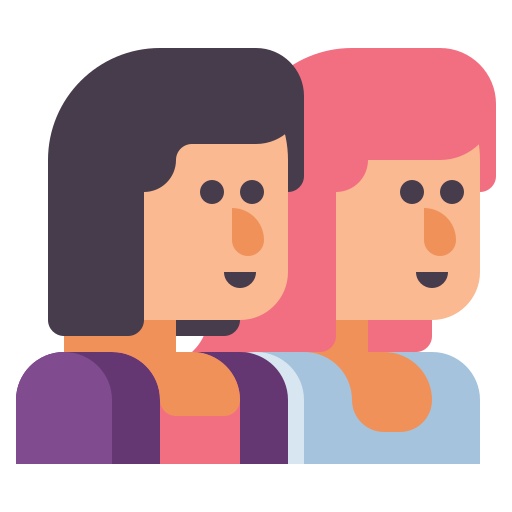
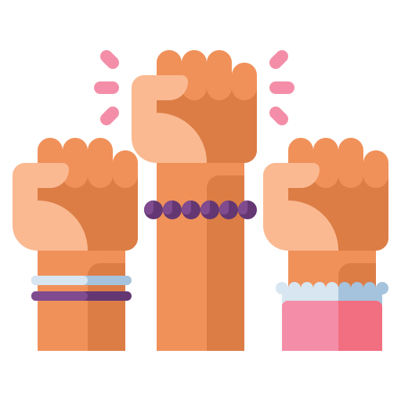

SOMOS FUTURO.
.png)
Sabian que sólo el 33% de las mujeres en la Argentina integran el universo de las carreras de ciencia,
tecnología, ingeniería,arte y matemáticas.
Aca te vamos ayudar a obtener informacion sobre que son las carreras STEAM y donde estudiar una de estas carreras
cerca de tu zona, en el Gran Buenos Aires.
¡sigamos disminuyendo la brecha de genero!

En Latinoamérica, el porcentaje de mujeres en carreras STEM es del 30% y puede bajar a medida que sube el nivel de estudios alcanzados. Pero, ¿por qué sucede esto específicamente con carreras de esta área?
Pues, además de la falta de información antes de elegir una carrera, también están los estereotipos y roles que pueden influir en la carrera que elegimos. Como nos explica Beauvoir, en su libro El Segundo Sexo (1949), a las mujeres se les educa para el rol de cuidado y servicio, mientras que a los hombres se les guía a habilidades técnicas y analíticas.
Además, está el techo de cristal, o sea, la limitación en ámbitos laborales que hace que sea más difícil para una mujer alcanzar mayores metas y que la estanca, estas barreras invisibles que dificultan su crecimiento.
Aunque se pueda argumentar que pasa por falta de habilidades y aptitudes profesionales, esto es una idea errónea, ya que estas barreras se dan por estereotipos y reglas sociales.
